Lecture: Random Forests
Actuarial Data Science - Open Learning Resource
Recommended Reading
- An Introduction to Statistical Learning (ISLR): Review Chapter 8
- The Elements of Statistical Learning (ESL): Chapter 15 (excluding Sections 15.3.3, 15.3.4 and 15.4)
Learning Objectives
Tree-based methods and random forests are powerful yet relatively interpretable approaches for modelling complex, non-linear relationships. In this lecture, we build from single trees to ensembles and focus on practical questions an actuary cares about: how to tune models, how to assess performance, and when these methods are preferable to simpler models.
Understand the motivations behind ensemble learning methods, including bagging and random forests
Construct Classification and Regression Tree (CART).
Perform predictive modelling using random forests, including model fitting, hyperparameter selection, and model assessment
Compare random forests with other modelling techniques
Classification and Regression Trees (CART)
Introduction
- We begin by discussing ensemble learning methods.
- An ensemble learning method builds a strong predictor by combining multiple weak predictors.
- The weak predictor can be any model, but the most commonly used is the classification and regression tree (CART).
A Classification Example Using CART

A Regression Example Using CART
- The
Hittersdataset: predict a baseball player’s log salary based onYearsandHits
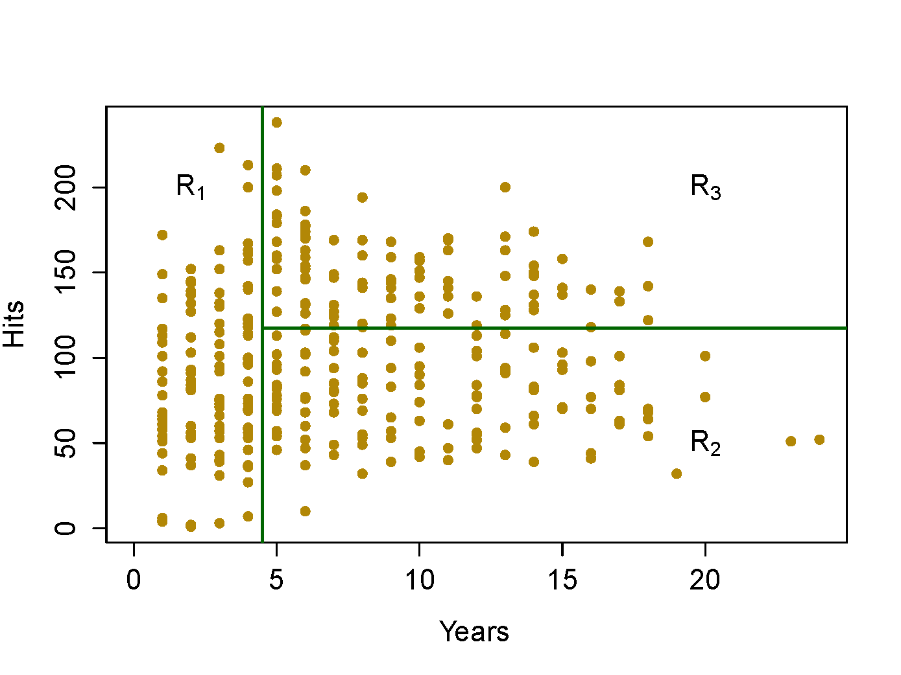
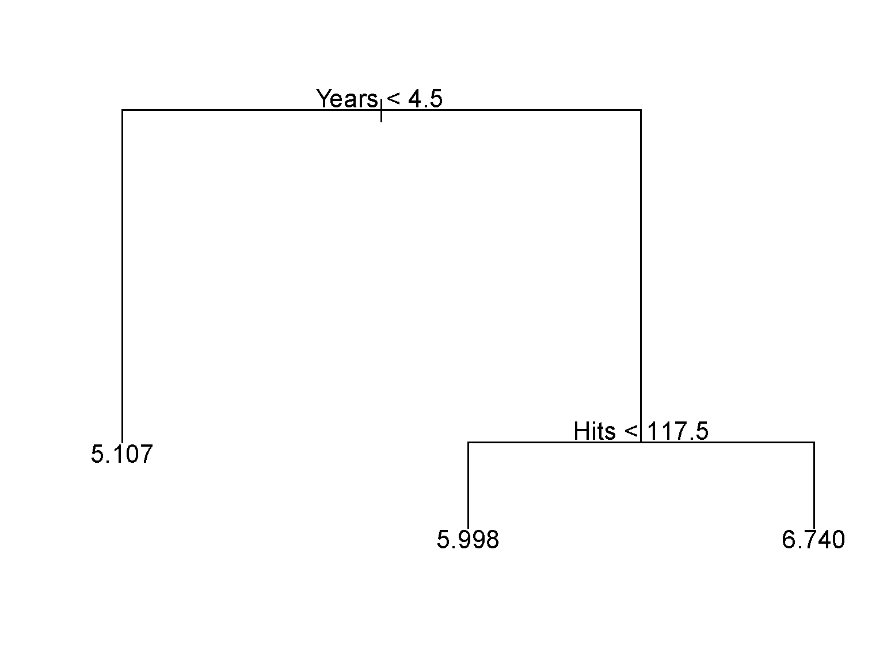
Terminologies
- Node: a point in a decision tree that corresponds to a subset of the data, typically resulting from one or more binary splits.
- Root node: the node at the top of a tree, representing the full dataset.
- Terminal nodes (leaves): nodes at the bottom of the tree that are not split further.
- Branches: the segments of the trees that connect nodes.
- Depth: the number of branches from the root node to the furthest leaf (terminal node).
Classification and Regression Trees (CART)
- Binary splits
- Create terminal nodes that contain similar observations
- Can be used for both regression and classification:
- Regression: use the average of the response values in that group as the predicted value
- Classification: use the most common class of the response values in that group as the predicted class
Train CART: how to make the splits?
- Training a CART is like partitioning the data with one (or more) feature(s) at each step
- In theory, the regions could have any shape. However, we choose to divide the predictor space into high-dimensional rectangles or boxes, for simplicity and ease of interpretation.
- Our goal: create terminal nodes that contain homogeneous response observations.
- It is computationally prohibitive to find the optimal partitions. In practice, the partitions are found in a top-down greedy manner: recursive binary splitting.
- It begins at the top of the tree and successively splits the predictor space.
- At each step, the best split is made at that particular step, rather than looking ahead and picking a split that will lead to a better tree in some future step.
Partition Criteria: Regression
Let R_m denote a node. The RSS of the response variable in R_m is RSS_m = \sum_{i \in R_m} (y_i - \hat{y}_{R_m})^2 where \hat{y}_{R_m} is the mean of the response variable in R_m.
- Minimize the RSS of each node: \min\limits_{i,s}\sum\limits_{j:x^j_i\le s}(y_j-\bar y_1)^2+\sum\limits_{j:x^j_i>s}(y_j-\bar y_2)^2
- The lower the RSS, the more homogeneous the response values in that node
Partition Criteria: Classification
Let \hat{p}_{mk}=\dfrac{1}{N_m}\sum_{x_i \in R_m}I(y_i = k) represent the proportion of training observations in the mth region/node that belong to the kth class.
Classification error: E = 1 - \max_k(\hat{p}_{mk})
Gini index: G = \sum_{k=1}^{K}\hat{p}_{mk}(1 - \hat{p}_{mk})
Cross-entropy: D = -\sum_{k=1}^{K}\hat{p}_{mk}\ln(\hat{p}_{mk})
The lower these measures, the more homogeneous the response values in that group.
Partition Criteria: Classification (continued)

Stopping Criteria
- Minimum leaf node size
- Maximum number of leaf nodes
- Maximum depth
- Minimum improvement: no further splits that lead to a significant reduction in node impurity
Controlling Tree Complexity
- How to measure the complexity of a tree? (similar to the number of coefficients in LM/GLM)
- the number of splits, or the number of terminal nodes
- Review: bias, variance, and model complexity
- Our goal: optimise the bias–variance trade-off to maximise predictive performance on an independent test set.
Cost-complexity Pruning (weakest link pruning)
- In ISLR, we learned: \text{training error}+\alpha|T|=\sum_{m=1}^{|T|}\sum_{x_i\in R_m}(y_i-\hat{y}_{R_m})^2+\alpha|T|
- |T| is the number of terminal nodes of the tree T.
- R_m is the rectangle (subset of the predictor space) corresponding to the mth terminal node.
- \hat{y}_{R_m} is the predicted response associated with R_m, i.e., the mean of the training observations in R_m.
- \alpha controls the trade-off between the tree’s complexity and its fit to the training data, and can be tuned using cross-validation (CV).
Classification and Regression Tree (CART)
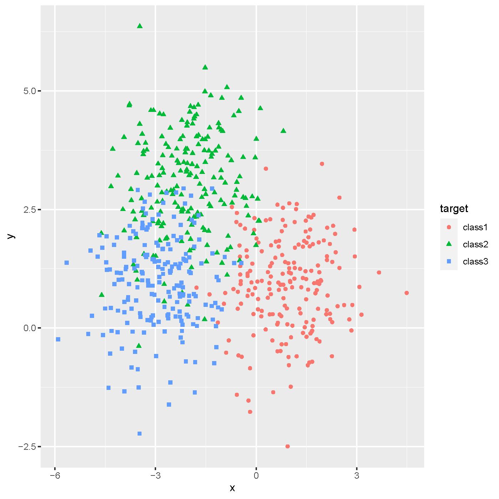
Classification and Regression Tree (CART)
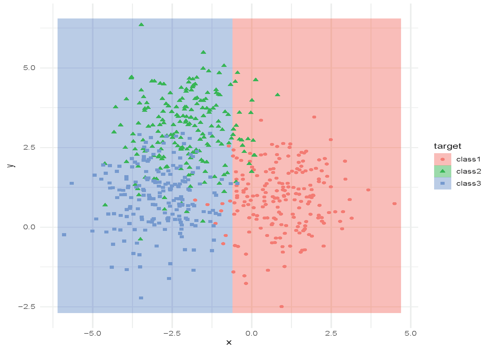
Classification and Regression Tree (CART)
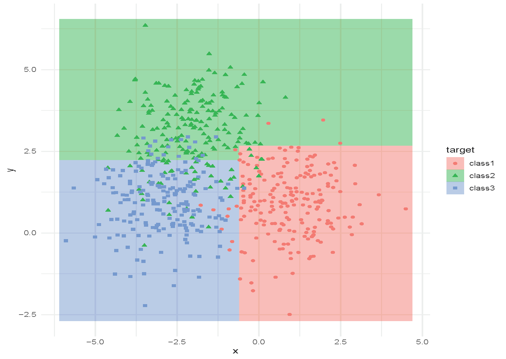
Classification and Regression Tree (CART)
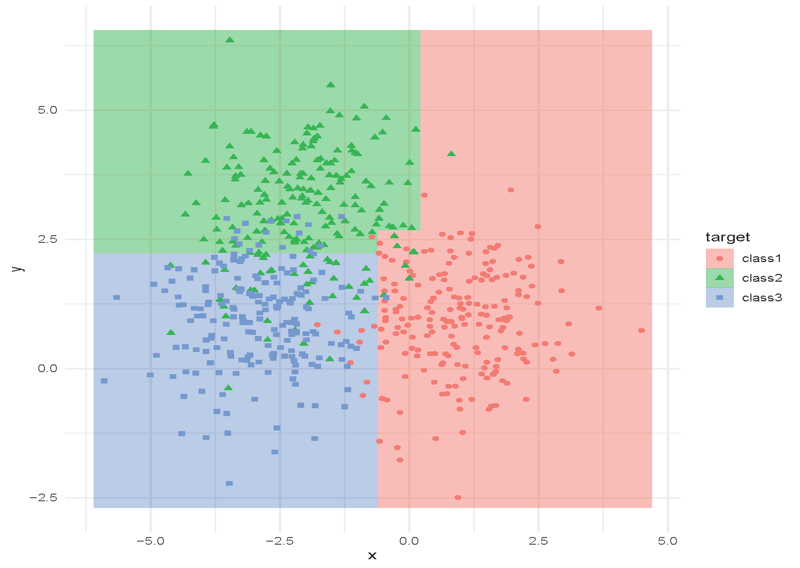
Classification and Regression Tree (CART)
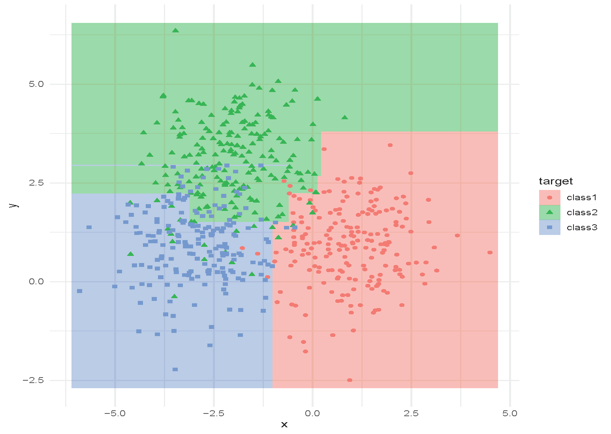
Classification and Regression Tree (CART)
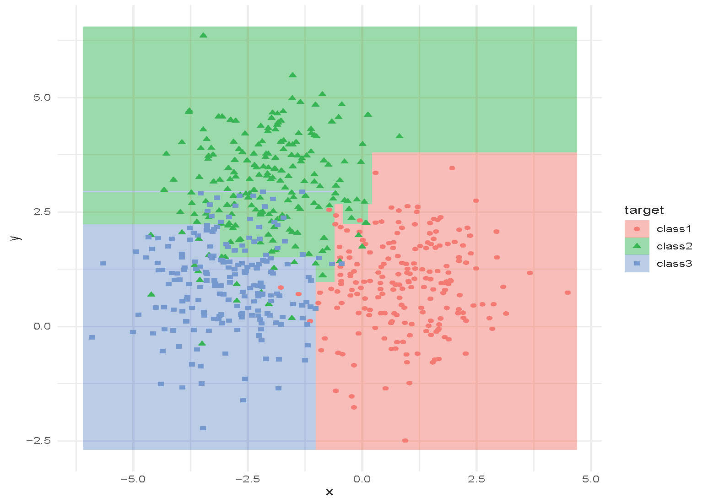
Classification and Regression Tree (CART)
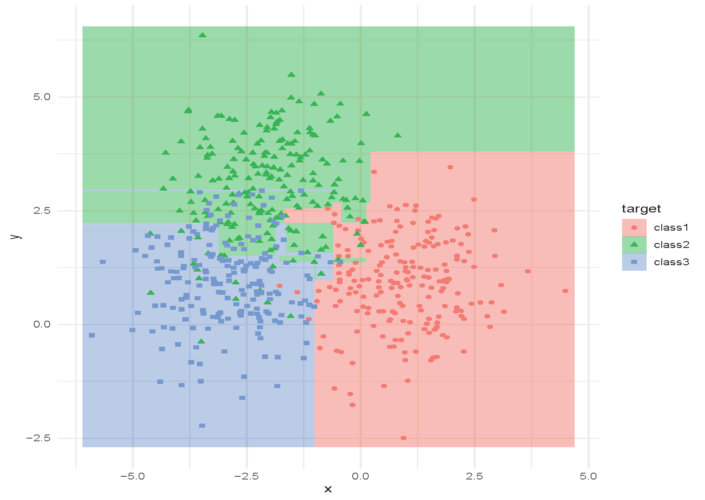
Classification and Regression Tree (CART)
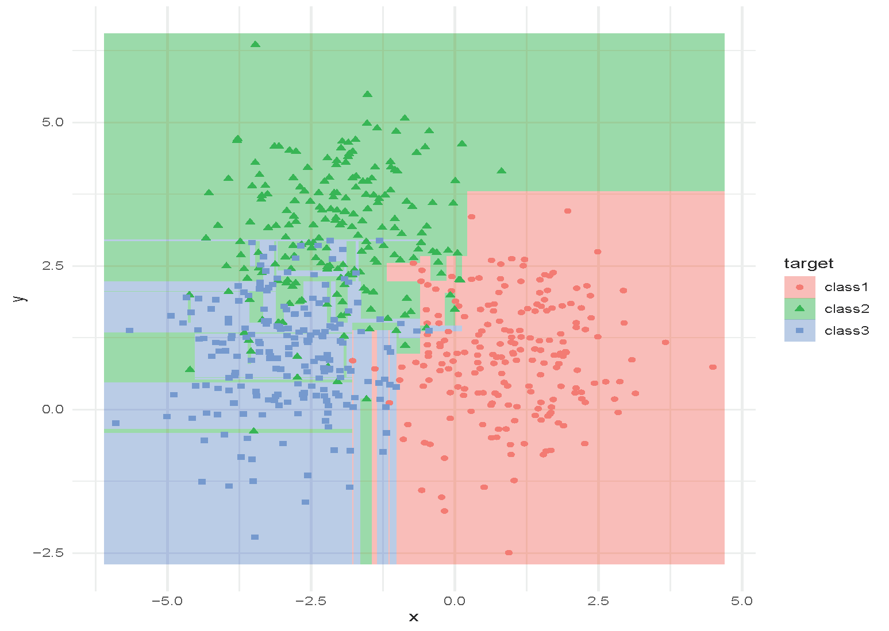
[Add a example picture of Regression Tree here]
Advantages and Limitations of CART
- Pros
- Fast in training and inference
- Interpretable, especially for shallow trees
- Handles nonlinear relationships: invariant to strictly monotonic feature transformations (no need to scale the data)
- Interactions are automatically accommodated
- Categorical variables are handled automatically without the need for binarisation or selecting a baseline model
- Variables/features are automatically selected
- Easy to extend to multi-class classification
- Immune to outliers
- Can be easily modified to handle missing data
Advantages and Limitations of CART (continued)
- Cons
- Performance is not very strong; sensitive to noise
- Prone to overfitting
- Categorical variables: tend to favour features with many levels over those with few levels
- Lack of model diagnostic tools for decision trees
CART vs. GLM
| GLM | CART | |
|---|---|---|
| Model | Y \mid X \sim \text{Exponential family}; g(\mu)=X^T\beta | A tree with binary splits |
| Continuous predictors | \Phi_j(x)\beta, where \Phi is the linear basis function of x | Tree splits based on the value of a continuous predictor |
| Categorical predictors | binarisation or selecting a baseline level | Tree splits according to categorical levels, e.g. X = a, b, c; left split: X = a, b, right split: X = c |
| Interactions | Need to be manually included in the model | Automatically incorporated via mixed splits |
| Collinearity | A major issue: inflates variance of coefficient estimates and predictions, leads to non-unique estimates and reduced interpretability | Less of an issue, but can affect variable importance measures |
Ensemble Methods: Bagging
Ensemble Methods
Can be applied to both regression and classification problems; applicable to CART and other statistical machine learning models.
- Bagging:
- Create multiple copies of the original training dataset using the bootstrap
- Fit a tree/model to each copy
- Combine the fitted results from all copies to create a single predictive model
- Random Forests
- Improve bagged trees/models by decorrelating the trees (reducing the variance)
- A random sample of m predictors is chosen as split candidates from the full set of p predictors.
Ensemble Methods (continued)
- Boosting
- Grow the trees/models sequentially by fitting small trees each time — learn slowly
- No bootstrap sampling; each tree/model is fit on a modified version of the original dataset
First Ensemble: Bagging (Bootstrap Averaging)
The first method to improve CART using ensemble methods is to train a number of CARTs, each trained on a bootstrapped dataset. The average of their outputs is then used as the final prediction.
A general-purpose procedure to reduce the variance of a statistical learning method
- particularly useful and frequently used in the context of decision trees
This often performs better than a single CART.
Bagging Procedure
- Bootstrap
- Sample with replacement repeatedly
- Generate B different bootstrapped training datasets
- Train
- Train on the bth bootstrapped training set to obtain \hat{f}^{\ast b}(x)
- Aggregate
- Regression: average all predictions \hat{f}_{\text{bag}}(x) = \frac{1}{B}\sum_{b=1}^{B}\hat{f}^{\ast b}(x)
- Classification: take a majority vote
Out-of-Bag Error Estimation
- Analogous to the idea of leave-one-out bootstrap estimation of prediction error.
- This is a straightforward way to estimate the test error of a bagged model, without the need to perform cross-validation (CV) or use a validation set.
- On average, each bagged tree makes use of around two-thirds of the observations.
- The remaining one-third of the observations are referred to as the out-of-bag (OOB) observations
- Predict the response for the ith observation using each of the trees for which that observation was OOB
- \sim B/3 predictions for the ith observation
- Take the average or a majority vote of these predictions to obtain a single OOB prediction for the ith observation.
Feature/Variable Importance
- Bagging can lead to difficult-to-interpret results
- Variable importance measures can be used (analogous to ANOVA across successive models)
- Bagging regression trees: RSS reduction for each split over a predictor
- Bagging classification trees: Gini index reduction for each split over a predictor
- Record the total amount by which the RSS/Gini index is decreased due to splits over a given predictor
- Select the predictors with the highest variable importance measures
Why Bagging Works?
- Bias-variance trade-off: \begin{align} \text{Err}(x_0) &= \sigma_\epsilon^2+\text{Bias}^2(\hat{f}(x_0))+\text{Var}(\hat{f}(x_0)) \nonumber \\ &= \text{Irreducible Error} + \text{Bias}^2 + \text{Variance} \nonumber \end{align}
- By averaging, the variance of the predictor is reduced.
Another Illustration
- Bagging three CARTs (T_1, T_2, T_3) in binary classification.
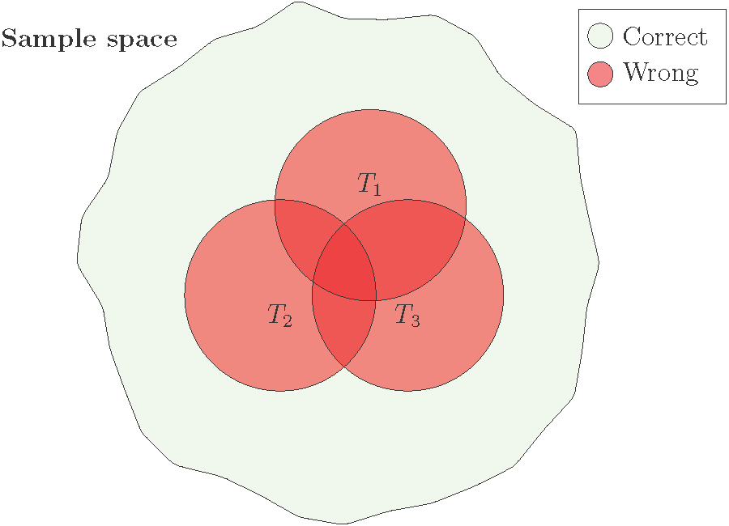
- The overall performance is better when the error regions (red circles) overlap less.
Why Bagging Works Not So Well?
- “Averaging” reduces the variance of random variables most when the variables are independent.
- However, in bagging, different CARTs are trained on bootstrapped datasets drawn from the same dataset. Therefore, the predictions of the CARTs are often strongly correlated.
- As a result, the reduction in variance is often limited.
Ensemble Method: Random Forest
Random Forest: Where Randomness Helps
- How can we improve bagging? Add more randomness.
- Random Forest: to “decorrelate” the CARTs, each tree is built using only a randomly selected subset of features.
- At each split of the tree, a fresh random sample of m predictors is chosen as split candidates from the full set of p predictors
- Strong predictors are used in (far) fewer trees, which helps to decorrelate the trees.
- This reduces the variance of the resulting model.
- Typically choose:
- m \approx \lfloor \sqrt{p} \rfloor for classification, and the minimum node size is 1.
- m \approx \lfloor p/3 \rfloor for regression, and the minimum node size is 5.
- In practice, these values should be treated as tuning parameters and depend on the problem.
- Bagging is a special case of random forests with m = p.
An Example of Random Forest
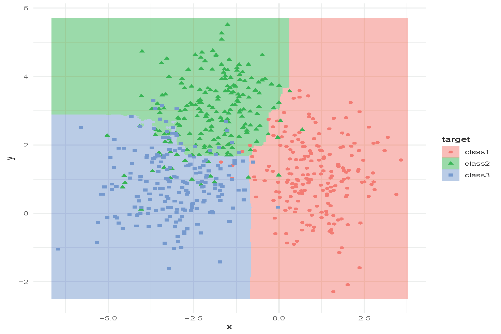
Tuning Random Forest
Hyperparameters:
- How many trees to use?
- How deep are the trees? When should the trees stop growing?
- What is the size of the subset of features to use?
These can be selected using cross-validation. Random forests are often not very sensitive to these parameters (a strong off-the-shelf predictor).
Out-of-Bag Error (OOB Error)
- For each observation z_i=(x_i, y_i), construct its random forest predictor by averaging only those trees corresponding to bootstrap samples in which z_i did not appear.
- The OOB error estimate is almost identical to that obtained by N-fold cross-validation.
- Random forests can be fit in a single sequence, with cross-validation effectively performed along the way.
- Once the OOB error stabilises, training can be terminated.
Example: OOB Error and Test Error
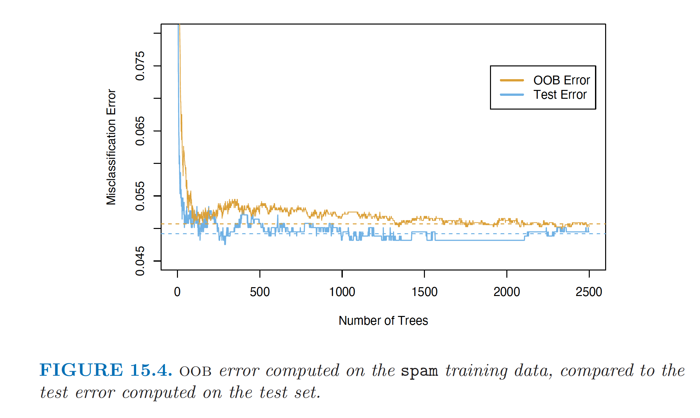
Feature/Variable Importance
A similar feature importance measure can be used for bagging by considering the average reduction in RSS or Gini index over all trees for each variable.
The OOB samples can also be used to construct an alternative variable importance measure that reflects the predictive strength of each variable.
- When the bth tree is grown, the OOB samples are passed down the tree and the prediction accuracy is recorded.
- Randomly permute the jth variable in the OOB samples, and the accuracy is computed again.
- The decrease in accuracy as a result of this permutation is averaged over all trees, and is used as a measure of the importance of the jth variable in the random forest.
- This randomisation effectively removes the effect of the variable, much like setting a coefficient to zero in a linear model.
Example: Feature Importance
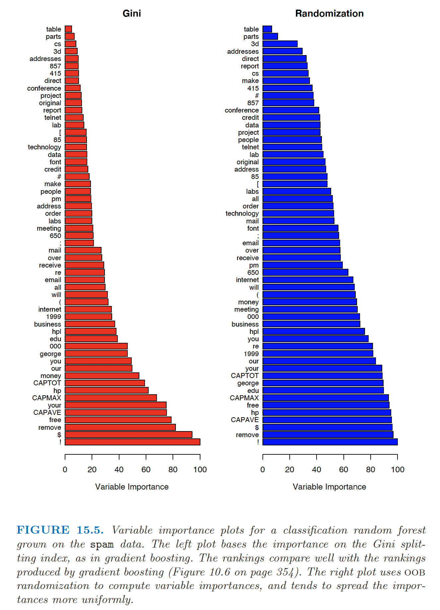
Random Forest (Pros and Cons)
- Pros
- Decent performance (nonlinear)
- Easy to train in parallel
- Easy to tune
- Increasing the number of trees does not lead to overfitting, but increases computation
- Pruning is unnecessary
- Not sensitive to outliers
- Cons
- Loses the interpretability of CART
- Often does not perform the best: does not reduce the bias of CART.
- LASSO can be used to reduce the number of trees
Using R and Actuarial Applications
Using R
- CART
library(trees)- OR
libary(rpart)
- Random Forest
library(randomForest)- OR
library(caret)
Review: An Introduction to Statistical Learning (James et al. 2013), Chapter 8.3 (Lab)
Actuarial Applications of Tree-based Methods: Life
Mortality modelling is an important topic in life insurance, used in the management of longevity/mortality risk and in the actuarial pricing of mortality-linked securities and joint-life products. Traditionally, regression-based models (such as GLMs) and extrapolative fitting techniques (e.g., ARIMA) have been used to model mortality.
In Deprez, Shevchenko, and Wüthrich (2017), regression trees are used both to illustrate how mortality modeling can be improved by accounting for feature components of an individual and to estimate conditional probabilities related to the cause of mortality. The analysis is based on Swiss mortality data from the Human Mortality Database.
Kopinsky (2017) uses tree-based models to fit and predict maternity recovery rates and mortality rates. The data for this study comprise between 500,000 and 3,000,000 records and were extracted from a selected Group Long-Term Disability Database (more detail available in the paper).
Actuarial Applications of Tree-based Methods: Health
Traditionally, health actuaries use simple claims data to set premium and reserves. Nowadays, they have access to large volumes of clients’ personal , claims, and medical information. Actuaries increasingly use advanced visualisation techniques and other machine-learning methods.
Diana et al. (2019) use machine-learning methods such as GLM, regression trees, random forests, and Bayesian analysis to model insurance claims.
Boodhun and Jayabalan (2018) use machine-learning algorithms, including random forests, to predict applicants’ risk levels. The dataset is from Prudential Life Insurance and contains nearly 60,000 applications with 128 attributes characterising the applicants.
Actuarial Applications of Tree-based Methods: General Insurance
Claims are typically modeled using GLMs. Other machine-learning techniques, such as tree-based methods, copula regression, and kernel regression, are now also used.
- Noll, Salzmann, and Wuthrich (2020) compare GLMs to regression trees, boosted trees, and neural networks on French motor third-party liability insurance data.